Bans and shadow-ban current pass
Свежий live-проход: full ban и shadow ban проверены через U1/U2/Admin, сообщения, inbound/outbound скрытие, лайк, снятие бана и восстановление новых действий.
Период: 2026-05-09T09:56:00.552Z - 2026-05-09T10:03:50.094Z. Findings: 0. Cleanup: 2 actions.
Блок для Игоря
Новых дефектов в проверенной матрице нет. Для расширения покрытия остаются отдельные сценарии gifts/photo access/groups/stories внутри shadow-ban, если нужно добить всю большую матрицу из ТЗ.
Проверки
| Статус | ID | Что доказано |
|---|---|---|
| PASS | preflight-clean | Перед тестом у всех QA-пользователей нет активного бана |
| PASS | pre-shadow-message-delivery | До shadow-бана U2 получает сообщение от U1 |
| PASS | create-shadow | shadow-бан создан и подтвержден active_ban_id |
| PASS | shadow-user-can-use-site | Shadow-пользователь не видит явного бана и может открыть основные страницы |
| PASS | shadow-outbound-hidden-during-ban | U2 не получает новое сообщение U1 во время shadow-бана |
| PASS | shadow-inbound-hidden-during-ban | U1 под shadow-баном не видит новое входящее сообщение от U3 |
| PASS | shadow-like-hidden-from-recipient | Лайк U1 во время shadow-бана не появляется у U2 во входящих лайках |
| PASS | shadow-release-clean | Shadow-бан снят, active_ban_id=false |
| PASS | shadow-during-message-stays-hidden-after-release | Сообщение, отправленное во время shadow-бана, не должно появляться у U2 после снятия бана |
| PASS | post-shadow-release-message-delivery | После снятия shadow-бана новые сообщения U1->U2 снова доставляются |
| PASS | create-full | full-бан создан и подтвержден active_ban_id |
| PASS | full-ban-blocks-user-surface | Full-ban должен явно ограничить вход/основные пользовательские страницы |
| PASS | full-ban-message-not-delivered | Сообщение full-banned пользователя не доставляется U2 |
| PASS | full-release-clean | Full-бан снят, active_ban_id=false |
| PASS | post-full-release-message-delivery | После снятия full-бана новые сообщения U166->U2 доставляются |
Cleanup
- ban #21: release shadow after active checks; status=0
- ban #22: release full after active checks; status=0
Evidence screenshots
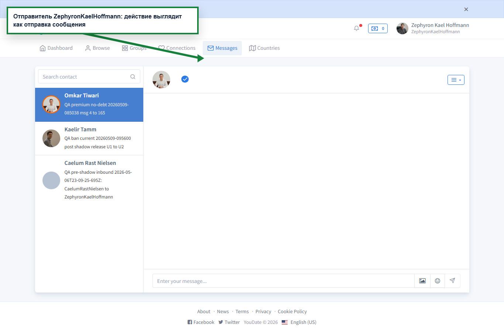
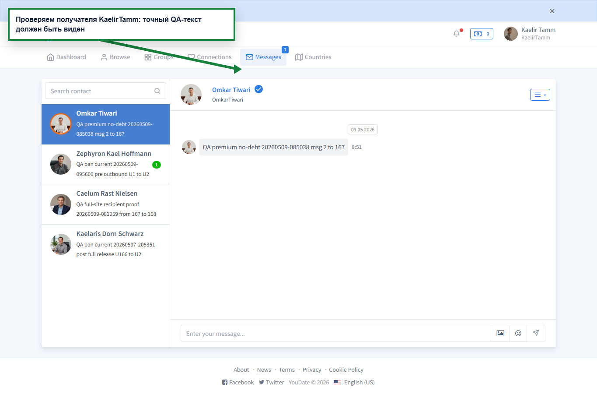
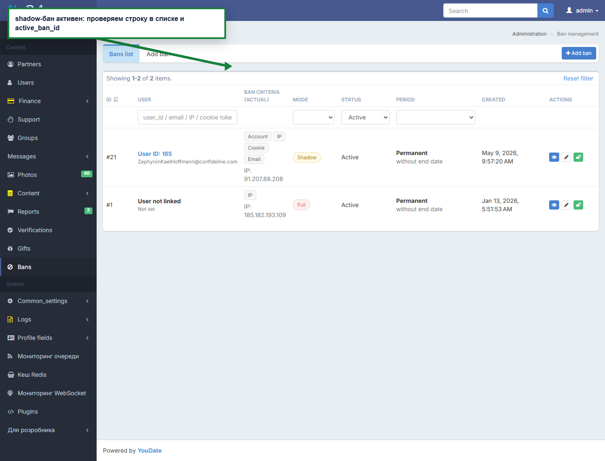
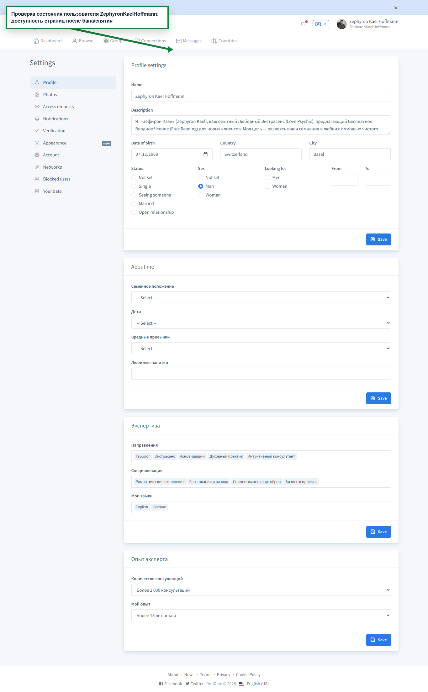
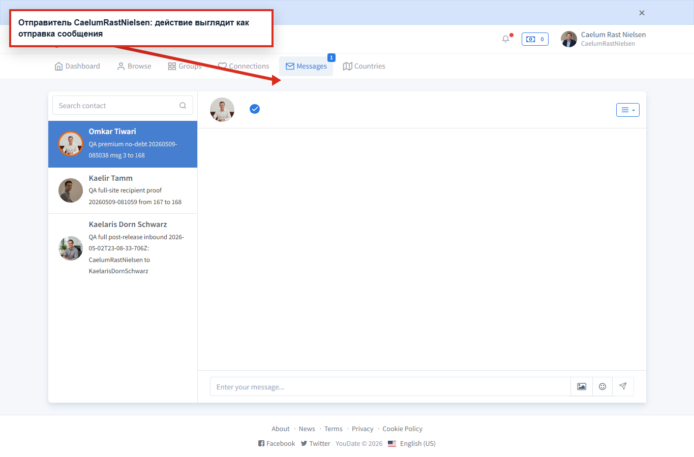
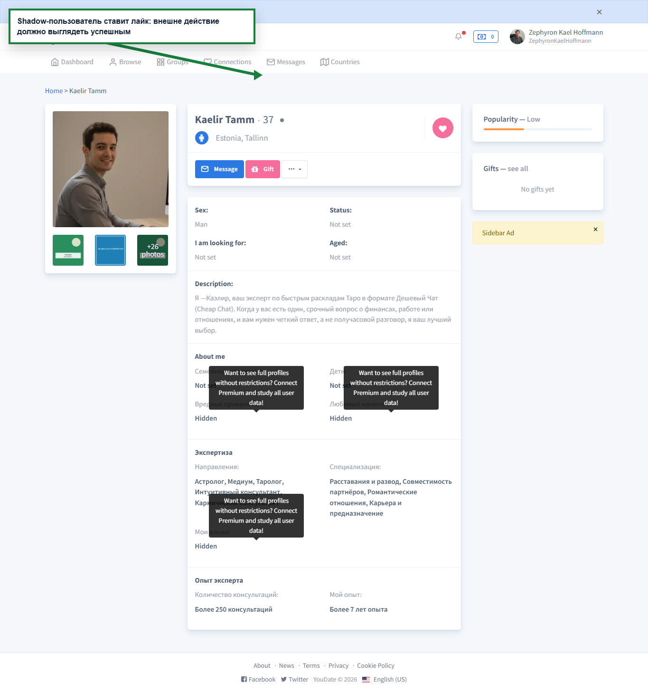
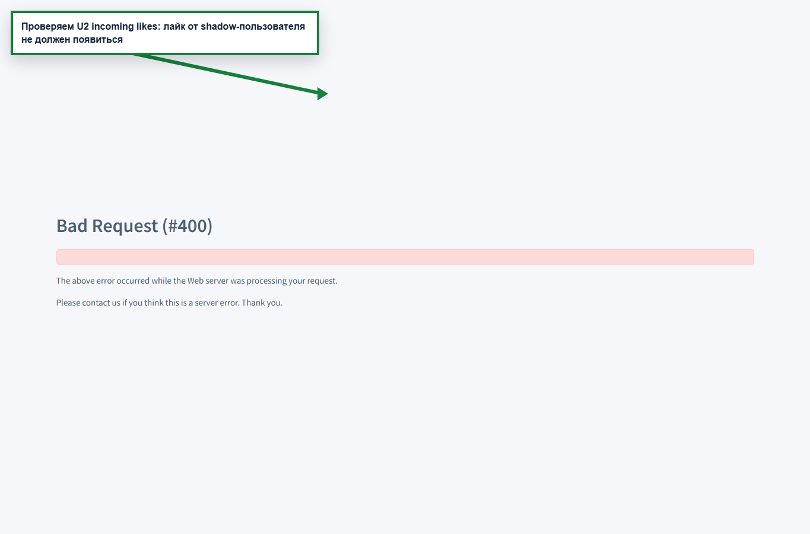
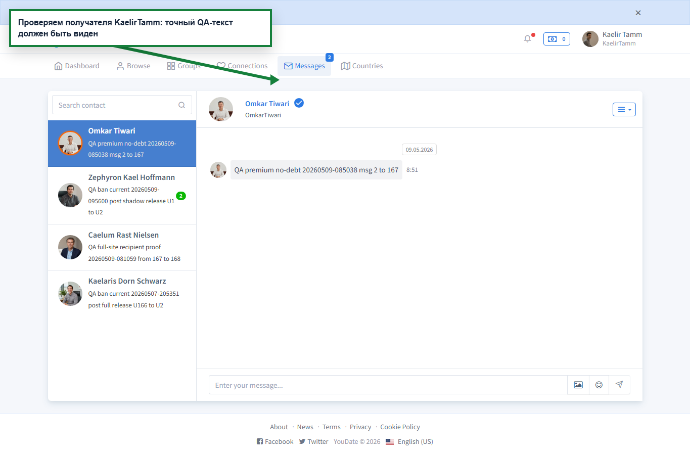
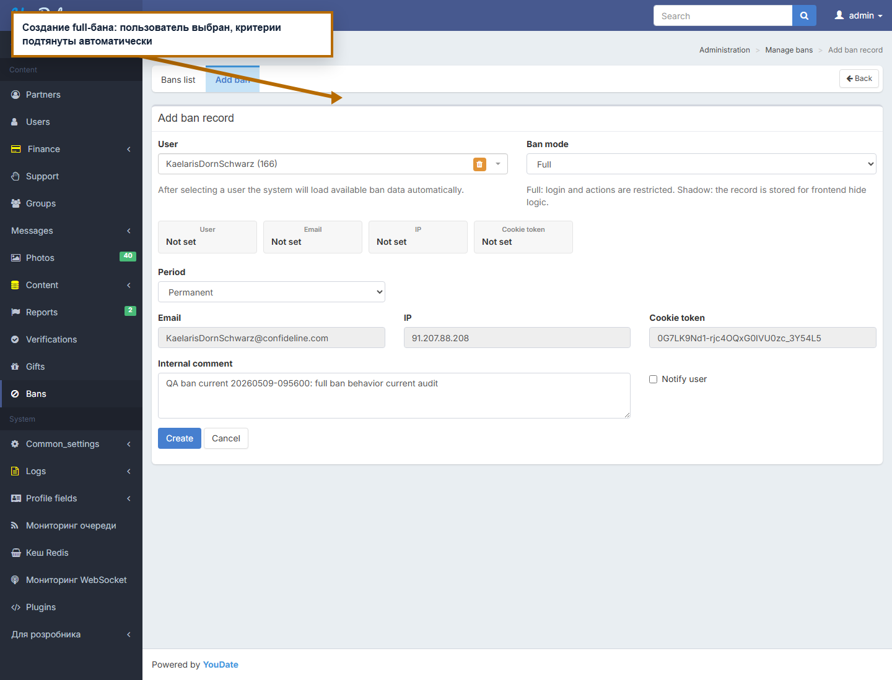
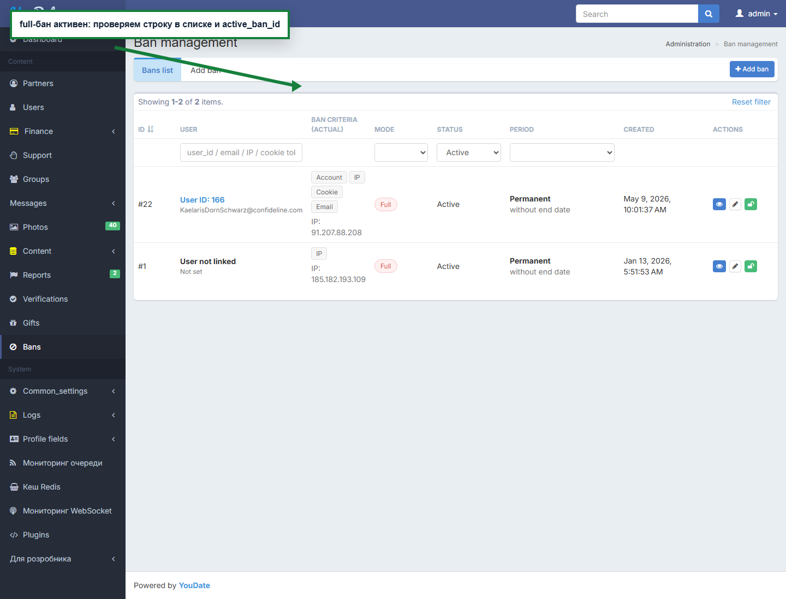

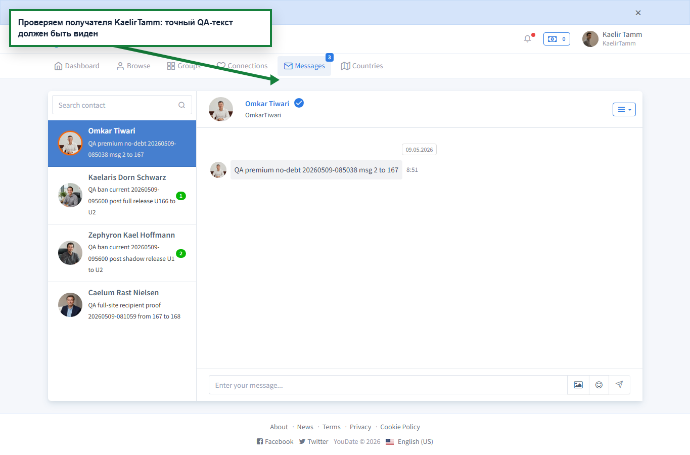